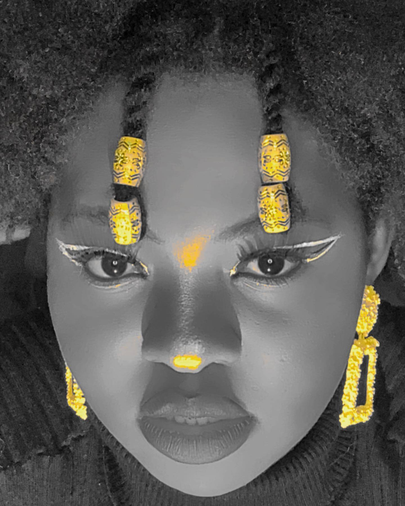
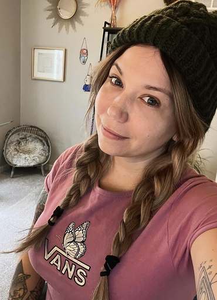

Natasha is a jack of all trades. Holding a Master's in International Education and an undergraduate degree in Anthropology and music. She is always looking for a challenge and has traveled around the world picking up various languages along the way. Coding is her newest passion and she is feels like she is finally where she belongs. LinkedIn: https://www.linkedin.com/in/kollernatasha/ GitHub: https://github.com/KollerCode
Benis is a Computer Science Junior at University of Maryland, College Park. She has worked in the tech industry for about two years as a User Interface developer and enjoys building fun web apps in her spare time. LinkedIn:https://www.linkedin.com/in/tbenis/ GitHub: https://github.com/tbenis
I am a multi-talented engineer who excels at merging the creative world with the professional realm. With over several years of performing experience, I have a unique perspective on Management and an eye for detail when it comes to the overall project. With an advanced background in Software Engineering and Development, Music and multiple sides of business , I bring my creativity and out-of-the-box thinking to every situation. Whether playing concerts, planning events, coordinating schedules or negotiating budgets, I can easily adapt to the needs of any situation. LinkedIn: https://www.linkedin.com/in/jenniferroques/ GitHub: https://github.com/jenroques